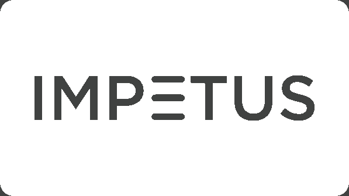

01
Architecture & backend
Designing reliable services and distributed systems for high-volume, business-critical work.
Technical leadership · Enterprise delivery
I’m Pradeep Kumar Rout, a Technical Lead with 11+ years of experience delivering resilient software for banking, financial services, and regulatory platforms.
Selected impact from enterprise projects
01 — About
I lead engineering work where reliability, thoughtful architecture, and clear collaboration matter.
Across regulatory data, custodian banking, and customer-facing platforms, I’ve worked from system design through production delivery. My approach combines hands-on Java and Spring expertise with pragmatic planning, quality practices, and close partnership with business and delivery teams.
I enjoy helping teams make complex work manageable: improving legacy workflows, strengthening automation, and creating the clarity needed to deliver with confidence.
02 — Expertise
A practical blend of engineering depth, financial-domain experience, and delivery leadership.
Designing reliable services and distributed systems for high-volume, business-critical work.
Building and modernizing workflows where accuracy, security, and availability are essential.
Supporting dependable releases with automation, observability, and disciplined testing.
Aligning stakeholders and teams around clear priorities, sound decisions, and outcomes.
03 — Experience
Selected roles and outcomes across enterprise technology.
Cognizant Technology Solutions

Impetus Infotech Pvt. Ltd.
BNY Mellon
BNY Mellon
04 — Education & credentials
C.V. Raman College of Engineering · BPUT
Bhubaneswar, Odisha · 2010–201405 — Contact
For engineering leadership, delivery, or collaboration opportunities, get in touch.